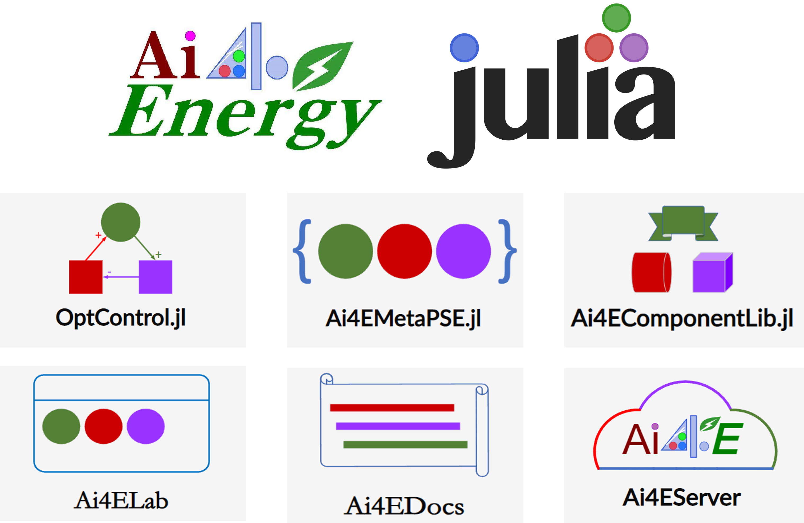

Ai4ELab

Introduction of Ai4ELab
Ai4ELab is a Virtual Simulation Lab of Ai4Energy。it's：
- Based on framework of Geine.jl and Stipple.jl
- Supported by Ecosystem of SciML and other powerful Julia packages.
- Deployed with Docker
Try some experiments in Ai4ELab, Try some experiments in Ai4ELab, you will see a powerful ecosystem!
Ai4ELab is open source and includes examples and basic tutorials. Just try and do some cool things with your imagination and creativity.
Welcome to contribute your Apps.
Preparation
- Install Julia
- Mirror for PkgSever(更换国内镜像)
- Install VScode and plug-in
- Learn how to pull request.